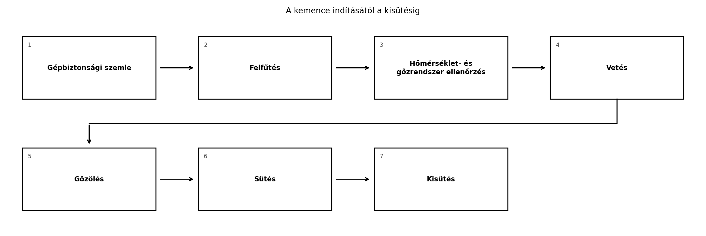

Egy hajnali pékségben gyakran az a legnehezebb pillanat, amikor a megkelt tésztákat a forró kemencébe kell juttatni. Ha a kemence nincs megfelelően felfűtve, a kenyér tömör, sápadt vagy szakadt lesz. Ha a vetési sorrend rossz, a különböző termékek egymás rovására sülnek, és a gőzölés elmaradása vagy túladagolása tönkreteheti az egész tételt. Ebben az alfejezetben azt tanulod meg, hogyan készítsd elő a kemencét, hogyan állítsd be a hőmérsékletet, a gőzt és a sütési sorrendet, majd hogyan helyezd be a tésztát biztonságosan lapáttal vagy vetőszerkezettel.
A kemence munkája egyetlen folyamat: a hő és a pára találkozik a hideg tésztadarabbal. Az alábbi folyamatábra a fő lépéseket mutatja. A részletes paramétereket mindig a technológiai lap adja.

A folyamat minden eleme egy döntési pont is: ha valamelyik lépés nem megfelelő, a következő lépést nem szabad megkezdeni.
Definíció. Felfűtés. A felfűtés a kemence sütőterének és hőtároló elemeinek felmelegítése a technológiai lapon előírt hőmérsékletre. A felfűtés során ellenőrizzük a hőmérséklet-eloszlást, a fűtő- és gőzrendszert, valamint a biztonsági berendezéseket.
Definíció. Vetés. A vetés a megkelt, előkészített tésztadarabok elhelyezése a sütőfelületen vagy a sütőtérben, a technológiai lapnak megfelelő távolsággal és sorrendben. A vetés történhet kézi lapáttal, vetőkocsival, vetőszalaggal vagy mozgó sütőfelületre.
Definíció. Sütési sorrend. A sütési sorrend az a műveleti terv, amely meghatározza, hogy a különböző hőmérsékletet, gőzt és sütési időt igénylő termékek milyen sorrendben kerüljenek a kemencébe. Célja, hogy a kemence hő- és gőzkészletét a legjobban használjuk ki, és a termékek ne sérüljenek.
Definíció. Gőzölés. A gőzölés a sütőtérbe juttatott vízgőz rövid, a sütés elejére ütemezett adagolása. A hideg tésztafelületen a gőz kicsapódik, nedvesíti a héjat, késlelteti a felületi kéreg kialakulását, és segíti a keményítő csirizesedését, ezáltal a kemencerugást, vagyis a hirtelen térfogat-növekedést.
Szabály. A kemencét csak betanítás után, felügyelettel kezelheti a tanuló. A felfűtés, a vetés, a gőzölés és a kisütés során a védőkesztyű, a hosszú ujjú munkaruha és a zárt, csúszásmentes lábbeli kötelező.
Tilos. A sütőtérbe benyúlni, amíg a kemence üzemel, a mozgó részek forognak, vagy a felületek forrók. A védőburkolatot, reteszelést, vészleállítót kiiktatni tilos.
A következő műveletsor egy szakaszos (tételes) kemencére vonatkozik. Alagútkemencénél a sávsebesség és a zónahőmérsékletek beállítása a gépkönyv szerint történik.
A 7–8. lépés lapátos vetését és a biztonságos ajtónyitást az alábbi ábra mutatja. A felső képsor számozása a vetés mozdulatainak sorrendje: a tészta a lapáton, vágással felfelé (1); a lapát gyors, határozott becsúsztatása a sütőfelületre (2); a lapát visszahúzása, miközben a tészta a helyén marad (3); a következő darabok sorban, a technológiai lap szerinti hézaggal (4). Az alsó pár az ajtónyitást veti össze: hibásan a pék a nyitott ajtó elé hajol, és a kiáramló gőz az arcát éri; helyesen előbb a páraelszívóval vagy a kéménycsappantyúval csökkenti a gőzteret (ha a gépkönyv megengedi), majd oldalt, az ajtólap mögött állva, védőkesztyűben, hosszú ujjú munkaruhában és arcvédővel nyitja az ajtót.
A forró sütőtér elé hajolni akkor is tilos, ha „csak egy pillanatra” nézel be: a gőz és a forró levegő az ajtónyitás első másodperceiben csap ki a legerősebben. A HTML-kiadásban a vetés lépései egyenként lejátszhatók, az ajtónyitás hibás és helyes módja gombbal váltható.
Példa 1. Sütési sorrend összeállítása. Egy reggeli műszakban négy terméket kell sütnöd: 1,0 kg-os búzakenyeret, 0,08 kg-os zsemlét, rozsos kenyeret és brióst. A technológiai lapok szerinti értékek a következők:
| Termék | Kemencehőmérséklet (°C) | Gőzölés (s) | Sütési idő (perc) |
|---|---|---|---|
| Rozsos kenyér | 240 | 8 | 40–45 |
| Búzakenyér | 230 | 6 | 30–35 |
| Zsemle | 210 | 3 | 14–16 |
| Briós | 190 | 0 | 12–14 |
Helyes sorrend: először a rozsos kenyeret süsd, mert a legmagasabb hőmérsékletet és a legtöbb gőzt igényli. Utána a búzakenyér következik, majd amikor a kemence hőmérséklete kissé csökken, a zsemle, végül a legalacsonyabb hőt igénylő briós. Így a kemence hőjét csökkenő sorrendben használod ki, és nem kell hűteni vagy újra felfűteni.
Példa 2. Vetési távolság számítása. Egy sütőfelület 4 m². Az üzemi előírás szerint 1,0 kg-os kenyérből egy darabnak 0,06 m² vetési terület szükséges. Hány kenyér fér egy szintre?
A darabszám:
Tehát 66 db kenyeret vethetünk egy szintre úgy, hogy a darabok között megfelelő hézag marad. Az érték tanulási példa, az üzemi technológiai lap ettől eltérhet.
Példa 3. Gőzölővíz-fogyasztás. A gőzfejlesztő névleges vízfogyasztása 9 l/perc (kb. 0,15 l/s; tanulási példa, gépfüggő). Egy vetési ciklusban 6 másodpercig gőzölünk, és 20 vetést végzünk. Mennyi vizet használ el a gőzölés?
Először a gőzölési idő percben:
Egy vetés vízfogyasztása:
A 20 vetésre:
A számítás segít a gőzfejlesztő vízszintjének ellenőrzésében, de a tényleges fogyasztást a kemence gépkönyve határozza meg.
Egy pékségben a tanuló pék a reggeli műszakban a zsemléket tette be először, mert azok keltek meg leghamarabb. A kemence hőmérséklete ekkor 230 °C volt, a zsemle gyorsan megbarnult, de a belseje nyers maradt. Utána a búzakenyeret vetette, amikor a kemence már 210 °C-ra hűlt. A kenyerek nem kaptak elég kezdeti hőt, a kemencerugás elmaradt, a héjuk sápadt és szakadt lett.
A hiba oka az volt, hogy a sütési sorrendet nem a hőmérséklet- és gőzigény szerint állították össze. A helyes sorrend az lett volna: először a magas hőt és gőzt igénylő búzakenyér, majd a zsemle, vagy külön kemencében, külön hőfokon sütni a két terméket. A példa tanulsága, hogy a sütési sorrend nem kényelmi kérdés, hanem a termékminőség egyik kritikus feltétele.
Cél: a kemence felfűtése, a vetés végrehajtása lapáttal vagy vetőszerkezettel, a sütési sorrend betartása és a gőzölés elvégzése a technológiai lap szerint.
Eszközök és anyagok: kemence, gőzfejlesztő, hőmérő, vetőlapát, vetőkocsi vagy vetőszalag, sütőlemezek, védőkesztyű, arcvédő, sütési napló, liszt vagy búzadara a vetőfelülethez.
Higiénia. A munka megkezdése előtt ellenőrizd a munkaruha tisztaságát, viselj hajhálót, és ne viselj ékszert. A vetéshez használt lapátot, kefét és deszkát csak tiszta, sérülésmentes állapotban használd. A gőzfejlesztőbe kizárólag ivóvizet tölts. Ha a vetőfelületre lisztet szórsz, ügyelj arra, hogy ne porozz a késztermékek közelében.
Gépbiztonság. A kemence kezelését csak betanítás után, felügyelettel végezd. Üzem előtt ellenőrizd a védőburkolatot, a reteszelést és a vészleállítót. A gőzrendszer próbagőzölésekor arcvédőt viselj, és ne hajolj a gőzkibocsátó nyílás fölé. A forró sütőfelülethez, tepsihez és lapáthoz csak hosszú szárú védőkesztyűvel nyúlj. Tisztítást, beavatkozást csak leállított, áramtalanított, újraindítás ellen biztosított gépen végezz.
A gyakorlati útmutató lépéseit a fenti „Felfűtés, vetés, sütési sorrend és gőzölés lépésről lépésre” rész tartalmazza. A vetési sorrend összeállításánál mindig ezt a sorrendet kövesd:
Ellenőrzési pontok:
Tipikus hibák a gyakorlatban:
Dokumentálás. A sütési naplóban rögzítsd a felfűtés kezdetét és végét, a hőmérsékletet, a gőzölési időt, a vetés időpontját, a sütési időt és a kisütéskor mért maghőmérsékletet. Ha eltérést tapasztalsz, azt is írd be.
Termék: fehér kenyér, 10 db, késztömeg 1,0 kg/db.
| Nyersanyag | Lisztre vetített % | Mennyiség (kg) | Megjegyzés |
|---|---|---|---|
| Búzaliszt BL 80 (ellenőrizendő: MÉ lisztelőírás) | 100 | 7,00 | 22–24 °C |
| Víz | 60 | 4,20 | dagasztóvíz, 26–28 °C |
| Sütőélesztő | 2 | 0,14 | előre feloldva |
| Só | 2 | 0,14 | élelmiszeripari só |
| Sütőjavító | 1 | 0,07 | a gyártói adagolás szerint |
| Összes tészta | 165 | 11,55 | a feladási tömeg 10 db × 1,15 kg = 11,50 kg |
Műveleti paraméterek: tésztakitermelés: TA 160 (a tésztahozam 165 kg 100 kg lisztből); dagasztás: spirálos dagasztógép, 4 perc lassú, 6 perc gyors; tésztahőmérséklet: 27 °C; érlelés: 15–20 perc; feladási tömeg: 1,15 kg/db; alakítás: hosszúkás, vágva; kelesztés: 32 °C, 75% relatív páratartalom, 40–50 perc; sütés: 230 °C, gőzölés 6 s, sütési idő 30–35 perc; maghőmérséklet kisütéskor: 96–98 °C; hűtés: szobahőmérsékleten rácson.
Allergén. A termék glutént (búza) tartalmaz; a sütőjavító további allergénjei (pl. szója) a termékleírás szerint (ellenőrizendő: sütőjavító specifikáció). A technológiai lapon fel kell tüntetni a glutént az 1169/2011/EU rendelet szerint. A sütőfelületet és a vetőeszközöket csak akkor használd az adott allergént nem tartalmazó termékhez, ha azokat előzőleg elkülönítették és tisztították.
HACCP- és minőségi pontok. A kritikus szabályozási pont az átsültség: a maghőmérsékletnek el kell érnie a 96–98 °C-ot (tanulási példa, a HACCP-terv szerint ellenőrizendő). A sütőtér idegenanyag-mentességét vetés előtt ellenőrizd. A gőzölési paramétereket és a sütési időt a sütési naplóban dokumentáld.
A kemencefelfűtés, a vetés és a gőzölés minőségi eredménye a készterméken mérhető le:
A minőségellenőrzés során hasonlítsd össze a sütési napló adatait a technológiai lap előírásaival.
Hideg kemencébe vetés. Tünet: a kenyér térfogata kicsi, a bél tömör, a héj vastag és sápadt. Ok: a kemence sütőtere nem érte el a technológiai lap hőmérsékletét, vagy a felfűtési idő túl rövid volt. Megelőzés: mindig ellenőrizd a hőmérsékletet vetés előtt, és csak akkor vess, ha az elérte a beállított értéket.
Túlzott gőzölés. Tünet: a héj vastag, gumis, fényes, és a vágások nem nyílnak fel. Ok: a gőzölési idő túl hosszú, vagy a gőzfejlesztő túl nagy teljesítményű. Megelőzés: a gőzölési időt a technológiai lap szerint állítsd be, és próbagőzöléssel ellenőrizd.
Helytelen sütési sorrend. Tünet: egyik termék égett, másik nyers, vagy a kemence hőmérséklete hamar leesik. Ok: a termékek hőmérséklet- és gőzigényét nem vették figyelembe. Megelőzés: a sütési sorrendet a technológiai lapok alapján, a legmagasabb hőt igénylő termékkel kezdve állítsd össze.
Túl közel vetett darabok. Tünet: a termékek összesülnek, a héjuk nem egyenletes, a sütési idő megnő. Ok: a vetési távolság túl kicsi. Megelőzés: a darabok között hagyj a technológiai lap szerinti hézagot, és a sütőfelület szélére ne vess.
1. feladat (A). Sorold fel a kemence felfűtésének három biztonsági lépését.
2. feladat (A). Határozd meg, mi a különbség a vetés és a gőzölés között.
3. feladat (B). Egy sütőfelület 3,2 m². Egy 0,08 kg-os zsemle vetési területe 0,015 m²/db. Hány zsemlét lehet egy szintre vetni? (A számítás tanulási példa.)
4. feladat (B). Állítsd össze a sütési sorrendet a következő termékekhez: búzakenyér (230 °C, 6 s gőz), kalács (190 °C, nincs gőz), zsemle (210 °C, 3 s gőz). Indokold a sorrendet.
5. feladat (C). Egy pék a kenyeret gőz nélkül sütötte. Milyen héjhibára számíthatsz, és miért? Mit javítanál?
6. feladat (C). Hogyan előzöd meg az allergén keresztszennyeződést a sütési sorrendben, ha diós kalácsot és gluténmentes kenyeret is sütsz ugyanabban a kemencében?
7. feladat (D). A sütési naplóban a kemence hőmérséklete 210 °C, a gőzölési idő 20 s, a termék búzakenyér. Milyen lehetséges hibát látsz a paraméterekben? Indokold.
Önellenőrzés – válaszok:
1. feladat. Védőburkolat, reteszelés, vészleállító ellenőrzése; égőtér szellőztetése; hőmérséklet beállítása.
2. feladat. A vetés a tésztadarabok elhelyezése a sütőfelületre. A gőzölés a sütőtérbe juttatott vízgőz, amely a sütés elején nedvesíti a héjat.
3. feladat. , tehát 213 db zsemle. A darabszámot egészre kerekítjük lefelé.
4. feladat. Helyes sorrend: búzakenyér (230 °C, 6 s gőz), zsemle (210 °C, 3 s gőz), kalács (190 °C, nincs gőz). Indoklás: a hőmérséklet csökkenő sorrendben követi a termékek igényét.
5. feladat. Gőz nélkül a kenyér héja korán kiszárad, megmerevedik, a kemencerugás elmarad, a vágás nem nyílik fel, a héj szakadt lehet. Javítás: a vetés után azonnal gőzölj.
6. feladat. Az allergénkockázatot a sorrend csak csökkenti: búzaliszttel dolgozó üzemben a „gluténmentes” jelölés csak a jogszabályi határérték (legfeljebb 20 mg/kg, ellenőrizendő: 828/2014/EU), igazolt elkülönített gyártás és a HACCP-/allergénterv teljesülése esetén használható; a levegőben szálló lisztpor a kelesztőben és a kemenceelőtérben is szennyez. A gluténmentes kenyér dióra sem lehet szennyezett: külön lemez, sütőpapír, külön vetőeszköz, a diós kalács csak utána.
7. feladat. A búzakenyérhez jellemzően 230 °C és 6 s gőz szükséges. A 210 °C túl alacsony lehet, a 20 s gőzölés pedig a 6–12 s-os tanulási példához képest túl sok, gumis héjat okozhat. A paramétereket a technológiai laphoz kell igazítani.
A kemencefelfűtés során a sütőteret a technológiai lap szerinti hőmérsékletre melegítjük, és ellenőrizzük a hőmérséklet-eloszlást, a gőzrendszert és a biztonsági berendezéseket. A vetés a megkelt tésztadarabok elhelyezése a sütőfelületre lapáttal, vetőszerkezettel vagy mozgó sütőfelületre, a darabok közötti megfelelő hézaggal. A sütési sorrendet a termékek hőmérséklet- és gőzigénye szerint állítjuk össze: először a magasabb hőt és több gőzt igénylő termékeket sütjük, majd a kisebb hőt igénylőket. A gőzölést közvetlenül a vetés után végezzük, hogy a gőz a hideg tésztafelületre kondenzáljon, és elősegítse a kemencerugást. A gőzölési idő és a páraelszívás időzítése a technológiai lap szerint történik. A gépbiztonsági szabályok: a kemencét csak betanítás után, védőkesztyűvel és arcvédővel szabad kezelni; a forró sütőtérbe benyúlni, a védőburkolatot kiiktatni tilos. Az itt tanult sütési sorrend, gőzölési paraméterek és dokumentálási rend közvetlenül szükséges a Sütési idő és hőmérséklet, átsültség, kisütés és dokumentálás alfejezetben, valamint a Vizes tészta és vizes tésztából készült péksütemények fejezetben.